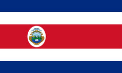

About Me
My name is Priscilla Valverde Álvarez. I was born in Costa Rica. I am currently working as junior developer assistant and I'm aspiring to be a web developer currently studying Dynamic Web Fundamentals as part of my WDD 131 course. I enjoy blending creativity with technical skills to design engaging web experiences. With a strong interest in HTML, CSS, and JavaScript.
San Jose, Costa Rica
Costa Rica is a small Central American country known for its rich biodiversity, stunning natural landscapes, and commitment to environmental conservation. With coastlines on both the Pacific Ocean and the Caribbean Sea, it offers pristine beaches, lush rainforests, and towering volcanoes.